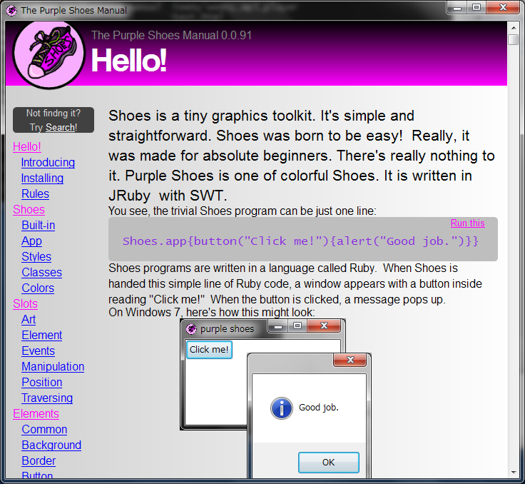

Ruby the Red Gem of Programming
This is an archived post This is an archived post
Previous
Index
Next
Purple Shoes Built-in Manual
March 18 2012, 5:22 AM
by ashbb

Started to implement built-in manual for
Purple Shoes
.
Let's have fun! :-D
ashbb
436 views and 0 responses